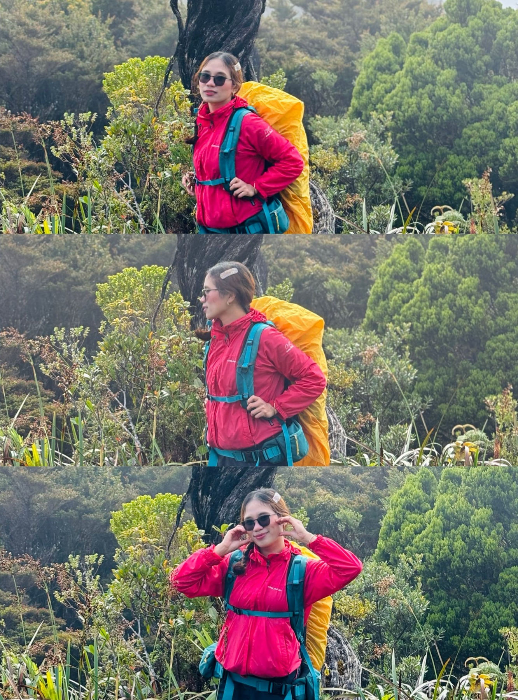
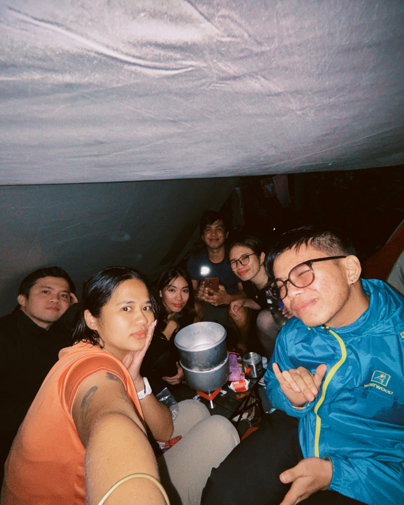
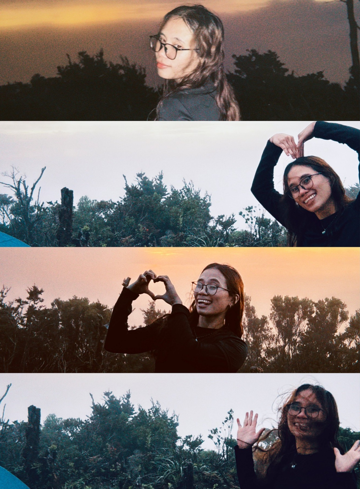
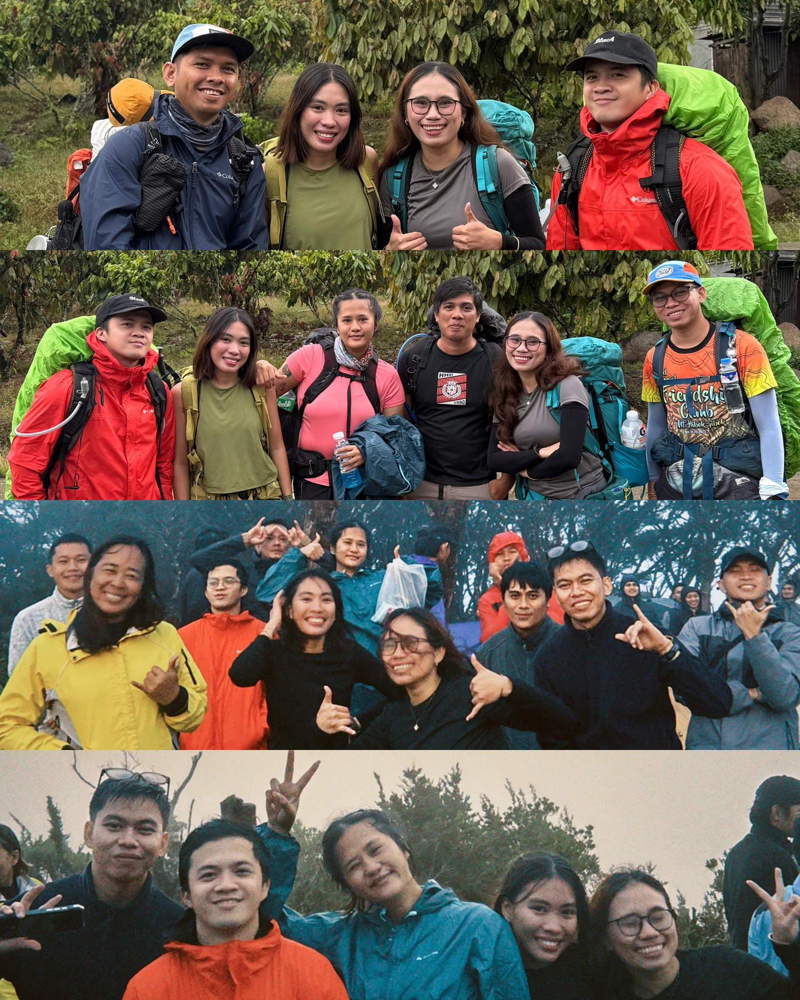

Lowkey one of the best mossy mountains I've ever hiked. All the crawling, the exhaustion, the body aches, the sore calves, the mud — every bit of it was worth it. The views were straight-up insane, but what really made this climb hit different was the people I shared the trail with.

The Trailhead
This was the most fun DIY hike ever. No packaged tour, no fancy logistics — just a plan, a local guide, and a group of hikers ready to earn the mountain the hard way. From the jump-off in Claveria, Sumagaya was already showing off: the village sitting quiet under a wall of fog, the peak somewhere up there, hiding.
(And before anyone asks — this was definitely not a backdoor or illegal route, hehe. We did it properly. Promise.)
Into the Cloud Forest
This is where the mountain collects its payment: crawling under mossy branches, mud that wants your shoes, calves burning on every assault. Sumagaya's cloud forest doesn't hand out views for free — but even mid-suffer, surrounded by all that green and moss, I knew this was one of the best mossy mountains I'd ever hiked.


Camp in the Mist
Tarps strung between mossy trees, dinner crowded into one tent, rain doing its thing outside. This is where the group of strangers stopped being strangers — the stories, the laughs, the random trail gossip that stays on the mountain. Core memories were made under those tarps.



Summit Gold
Then the fog finally let go, and the sky paid us back for everything. Golden hour above the ridge, the whole forest glowing below — views that were straight-up insane. Every ache from the climb up suddenly felt like a fair price.
Standing up there, I already knew: I will definitely come back.

The Team
What really made this climb hit different was meeting awesome people who share the same love for the mountains and adventure — it's like everyone was truly a mountain person, or "from the mountains." Super grateful for every story, every laugh, every core memory from this one.
